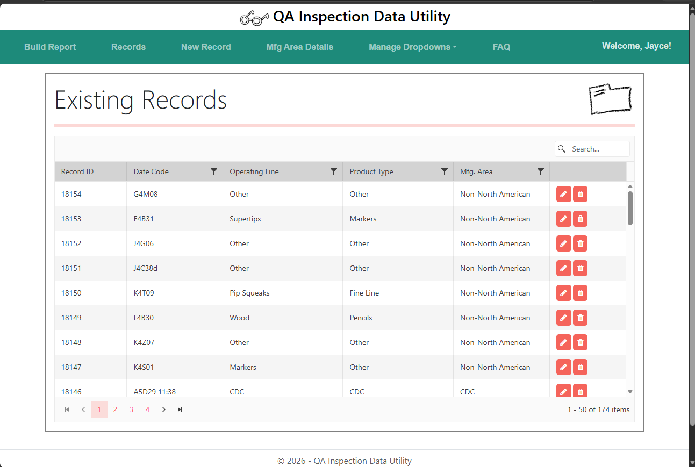
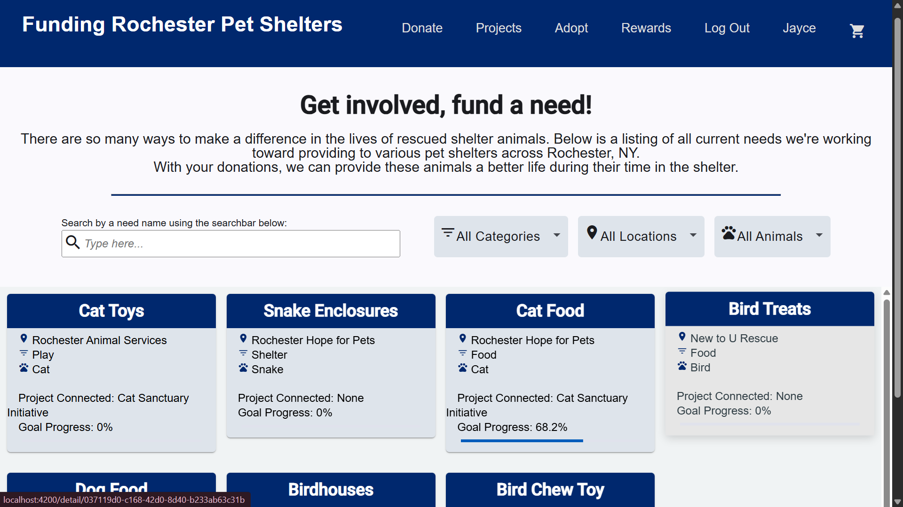

Featured Projects

A web app designed to assist the quality assurance team at Crayola in keeping record of defective products.View more details ->
View details ->

A web app created to host a conceptual support site for all local Rochester pet shelters. Created as a part of a team project.View details ->